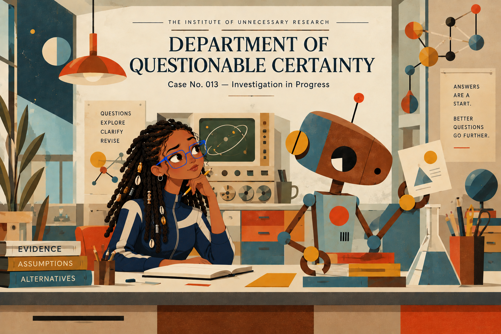

Department of Questionable Certainty — The Institute of Unnecessary Research — Case No. 013, Sadie vs. TOBOR

Investigation 13 · Case No. 013
Sadie vs. TOBOR
TOBOR generates answers. Sadie generates better questions.
Choose how Sadie questions TOBOR’s claim. Different questions turn up different weaknesses, and TOBOR remembers what has already come out.
Claim 1 of 10
TOBOR’s evidence card No. 1
“Humans use only 10% of their brains.”
Original claim: “Humans use only 10% of their brains.”
Sadie’s next question
Ask at least two questions to open the findings.
Case No. 013
Case Findings
The Institute of Unnecessary Research
Behind the Investigation: Research Note
Behind the Investigation explains the generative AI capabilities, technologies, and design decisions demonstrated by each Institute investigation.
- Institution
- The Institute of Unnecessary Research
- Investigation
- 13 — Sadie vs. TOBOR
- Primary Capability
- AI literacy and critical-thinking interaction
- Official Capability Description
- Uses conversational scenarios to expose assumptions, limitations, and questionable AI outputs.
- Research Question
- How can structured questioning help visitors identify unsupported assumptions, challenge questionable AI outputs, and develop more defensible conclusions?
- Prompt Methodology
- Adversarial prompting (structured critique).
- Implementation Type
- Deterministic, rule-based logic. This site does not call a live LLM or any external service. Its dialogue was authored in advance; AI assisted in drafting the code and content during development.
- How It Works
- The visitor chooses which kind of question Sadie asks: question the assumption, request evidence, or consider an alternative. Each kind has up to three follow-ups. TOBOR opens with an overconfident claim, answers the question actually chosen, and refers back to weaknesses already found. When the visitor presents the findings, the report lists the claim, the questions asked, the assumptions, evidence, and gaps identified, and TOBOR’s revised conclusion.
- Technical Implementation
- A static site of HTML, CSS, SVG, and vanilla JavaScript, with no build step or server. A small state machine (
js/investigation.js) records the questions asked and the findings uncovered, and selects authored responses from that state. The confidence figure subtracts a fixed weight for each newly found weakness, so asking something that reveals nothing new leaves it unchanged. Animation uses CSS keyframes and an SVG motion path on overlays placed above the single approved illustration, so the artwork itself is never moved or distorted. Sounds are synthesized in the browser with the Web Audio API (sine and triangle oscillators with short envelopes). No audio files, font services, or analytics are loaded. - What This Demonstrates
- The design of interactive AI-literacy experiences supporting critical examination of apparently authoritative machine-generated statements.
- Limitations
- Responses are scripted for ten claims and cannot adapt to new questions or new claims. Nothing here verifies facts live; the statements about each of the ten claims were written for this site and summarize widely accepted scientific understanding, without citations. TOBOR’s confidence percentage is a fictional character attribute, not a calibrated measure. A future live-model version would need a secure server-side service, which a static GitHub Pages site cannot provide.